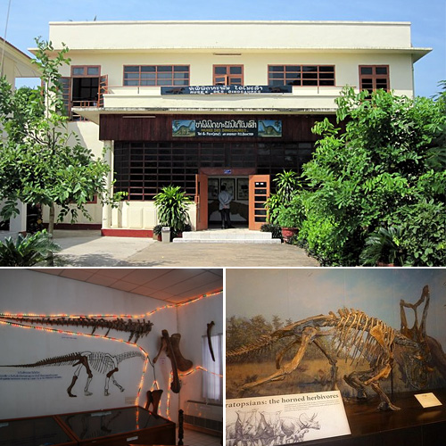

ພິພິດຕະພັນໄດໂນເສົາ
ພິພິດຕະພັນໄດໂນເສົາ ເມືອງໄກສອນພົມວິຫານ
ພິພິທະພັນໄດໂນເສົາ ຕັ້ງຢູ່ຫ່າງຈາກວັດໄຊຍະພູມ
ແຂວງສະຫວັນນະເຂດປະມານ 500 ເມັດພິພິທະພັນ ໄດໂນເສົາໄດ້ກາຍເປັນແຫຼ່ງທ່ອງທ່ຽວອີກບ່ອນຫນຶ່ງໃນ ແຂວງສະຫວັນນະເຂດເຊິ່ງໄດ້ເປັນປະຫວັດສາດ
ທີ່ມີຊື່ສຽງກໍຄື ສະແດງຮ່ອງຮອຍ ການປະກົດຂອງສິ່ງ ທີ່ມີຊີວິດທີ່ມີຂະຫນາດໃຫຍ່ທີ່ສຸດໃນໂລກ ແລະ
ຄວາມສາມາດຂອງນັກບູຮານຄົນລາວທີ່ຮ່ວມກັບນັກບູຮານ

ຊາວຝຣັ່ງເສດໄດ້ຄົ້ນພົບຮ່ອງຮອຍແລະ ຫຼັກຖານ ໄວ້ ໄດ້ຫຼາຍຢ່າງ. ຈຸດເດັ່ນຫນ້າຊົມກໍຄ ການຄົ້ນພົບຮ່ອງຮອຍ
ກະດູກ ແລະ ຮອຍຕີນ ໄດໂນເສົາ2 ປະເພດ4ສາຍພັນຄື ປະເພດກິນເນື້ອຊີ້ນ 1 ສາຍພັນ ປະເພດກິນພືດ3 ສາຍພັນ
. ຮ່ອງຮອຍ ກະ ດູກໄດໂນເສົາ ທີ່ສົມບູນທີ່ສຸດທີ່ຖືກຄົ້ນພົບ
ໃນ ສະຫວັນນະເຂດ ນັ້ນກໍ່ແມ່ນ ຮອຍ ຫີນ , ເຕົ່າຫີນ , ຫອຍຫີນ ,ແຂ້ວຊ້າງຫີນ ແລະທີ່ຫນ້າສົນໃຈທີ່ ສຸດ ກໍ ຄື ຊາກກະດູກ ໄດໂນເສົາທີ່ມີອາຍຸເຖິງ110 ລ້ານກວ່າປີແລ້ວ. ນອກນັ້ນ ຍັງມີ ຊິ້ນ ສ່ວນຫົວແລະ ແຂ້ວຂອງ}ສັດດຶກດຳ ບັນ ເປັນສັດ ເຄິ່ງບົກເຄິ່ງນ້ຳເຊິ່ງເຊື່ອກັນວ່າ ເປັນສັດລ້ຽງລູກ
ດ້ວຍນ້ຳນົມ ທີ່ເກີດກ່ອນ ຍຸກ ໄດໂນເສົາອີກແລະທັງຫມົດທີ່ກ່າວມາ
ນີ້ ປັດຈຸບັນແມ່ນຢູ່ໃນສູນພິພທະພັນດ້ວຍກັນ.ສະຖານແຫ່ງນີ້ທີ່ນຫມາະ
ແກ່ ການສຶກສາຄົ້ນຄວ້າແລະຜູ້ທີ່ຮຽນຮູ້ເຖິງໂລກໃນຍຸກເກົ່າັງມີງານຕະຫຼາດນັດ ແລະ ການຫຼິ້ນກິລາ ດັ້ງເດີມນັ້ນແມ່ນມີແຕ່ກິລາໝາກຂ່າງ ແຕ່ປັດຈຸບັນບໍ່ເຫັນມີການສົ່ງເສີມພໍປານໃດ.